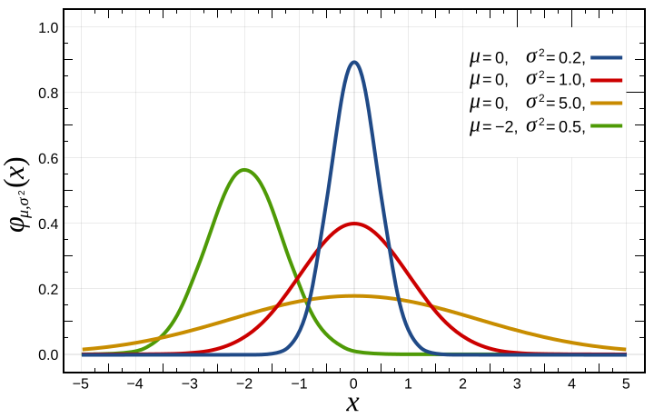

Parametric significance tests assume that the data follow a specific distribution (typically the normal distribution). If their assumptions are met, they have greater power than non-parametric test. Otherwise, non-parametric tests should be used. Thus, parametric tests should only be used after carefully evaluating whether the assumptions of the test are sufficiently fulfilled.
This table gives an overview of the most popular parametric tests:
| Test | Test for what? |
|---|---|
| Student’s t-test, Paired Student’s t-test | Difference in paired means and means |
| Chi-squared test | Independence of group counts |
| One-way ANOVA | Difference in means of several independent variables |